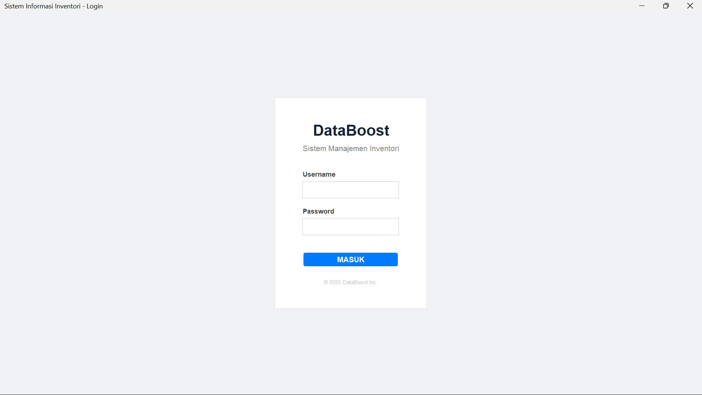

PROJECT 01

Aplikasi desktop berbasis Java untuk manajemen inventori barang secara lengkap. Dibangun dengan arsitektur MVC dan terhubung ke database MySQL, mendukung multi-role pengguna (Admin & Staf).
JavaJavaFX / SwingMySQLMVC
Fitur Utama
▹Dashboard monitoring stok dengan grafik real-time dan notifikasi stok kritis
▹Modul transaksi penjualan dengan kalkulasi otomatis dan riwayat history
▹CRUD data inventori lengkap dengan filter kategori dan pencarian barang
▹Manajemen pengguna multi-role dengan autentikasi login yang aman
▹Laporan PDF otomatis untuk stok, penjualan, dan pembelian


